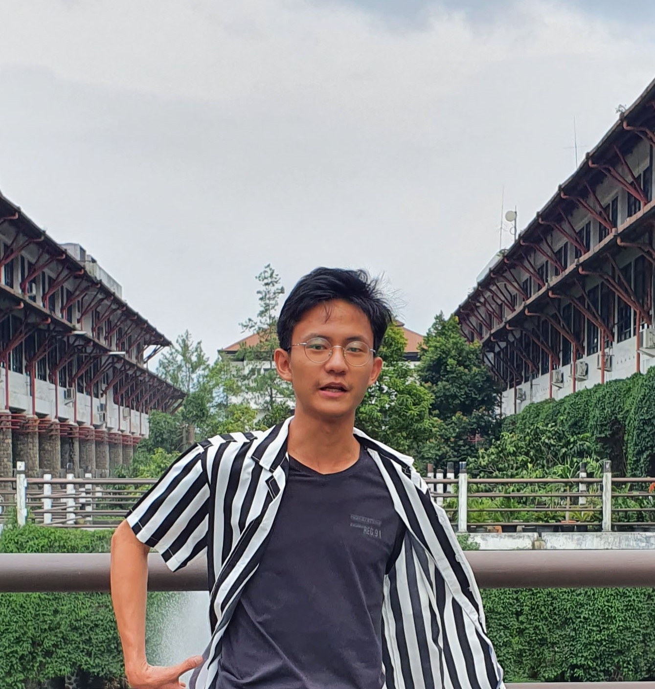

13217003@std.stei.itb.ac.id
I am an undergraduate senior in Electrical Engineering at Institut Teknologi Bandung. I am affiliated with Microelectronics Center of ITB as a research assistant, working with Prof. Trio Adiono Currently, I am building a low-power accelerator design for deep neural network inference. I am enthusiastic about discovering new possibilities in specialized accelerators design at the intersection with the Internet-of-Things.
Lamen: A Scalable IoT System to Help SRI Implementation with Paddy Land Monitoring (2021)
A multi-node system for land monitoring collects that data from eight different sensors. Our system could help 147 farmers implement sustainable Rice Intensification Systems and gain a 60% potential increase in rice yield while minimizing 76.4% of fertilizer usage. We have completed our Proof-of-Concept, thanks to the Sarinah’s Farmer Association in Bandung Regency!
Full-Custom Layout for MAX and Q-matrix Updater for Reinforcement Learning Circuit (2021)
It consisted of two circuits: MAX and Q-matrix Updater, both implemented using Mentor© Pyxis™. I have completed the design of the 4-bit MAX Circuit until the post-layout simulation, which utilized 184 transistors inside 14,297μm2 of the area. Then, the 4-bit Q-Matrix Updater design was delivered by its circuit elements of booth recorders and RCAs
Full-Custom Layout of Custom Logic Gate using Complementary CMOS Technology (2021)
My first-ever custom layout design! I have offered four different layouts with another compromise between size and performance. One of the designs was implementing a novel L-shaped NWELL layout, which brought the best area usage of 0.12μm and 6ps of propagation delay. All of them were done using DSCH and MicroWind.
Vooya “Passion Playground” (2020)
The times before computer architecture. My team and I developed a job fair to address Indonesians’ narrow, distorted, and non-future-proof job aspirations. I pioneered the theme, which gained a great attraction from my first pitch to the CEO. Today, this theme is still used and has attracted a 10,000+ audience and 200+ speakers!
Gantuwa: Unleash the Power of Agro-Ecotourism (2020)
A redeveloped concept from WaKita to help Yogyakarta’s ecotourism industry. We have identified water crisis in the region, then proposed a total water management system with IoT. Furthermore, collected data will be processed with management reports, enabling data-driven funding access to expand its business. This project won the 1st runner-up title from Gadjah Mada University Technocorner!
WaKita: A Holistic Platform for Modernization and Optimization of Agricultural Systems (2020)
An incremental improvement from Hauma! We have learned that Systems of Rice Intensification (SRI) could benefit Indonesian farmers with its yield increase within minimal water usage. However, it required high watering precision, which makes it difficult for most farmers. So, we added an automated watering control to help them use SRI! This project won the 2nd runner-up title from the University of Udayana’s ELCCO!
Hauma: Easy Solution for Rice Field Empowerment (2019)
We wanted to tackle three problems with a single hit: unreliable paddy land data (government), water fluctuation (farmers), and funding accessibility between farmers (banks). Our IoT nodes collect data from land and then process it with the cloud to provide predictive insights. This project won the 1st runner-up title from Yogyakarta State University’s ELINATION
Shrinking Building Game (2019)
My first ever project experience with the Koreans to implement Object-Oriented Programming in Python! I created the block-stacking mechanism, the graphics design, and the primary program function to combine three subprograms. We spent time with fun and understood each other culture better!
Evaluating Orchestration with Docker Swarm using Raspberry Pi Cluster
Multiple Raspberry Pis were used to concede docker task distribution properties within extreme conditions (i.e., unexpected shutdown and extremely non-balanced distribution). I generated the custom cluster setup with four boards, the testing methodology, and the pitch deck. We have learned a considerable insight within the distributed computing systems scaling!
Distributed Weather Station (2019)
My first international student collaboration in South Korea! I developed the rain and environment sensing system with Python. I also set up the microserver and database using SQL, using Raspberry Pi. Working inside a diverse environment is super fun!